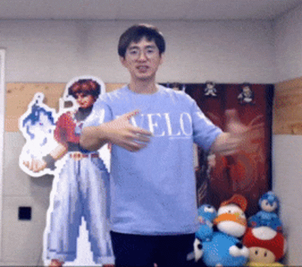

뭉탱이
케인이 과거 동인천역 앞 버스정류장에서 사람들이 모여있을 때 갑자기 버스를 타러 나타나 독특한 움직임으로 새치기를 하는 친구의 모습을 묘사하며 사람들이 몰려있는 모습을 뭉탱이로 있다고 표현한 것이다. 이 썰을 본 한 팬튜브에서 딥웹식으로 영상을 편집하여 상술한 "무빙맨"이 만들어진 것이다. 무빙맨에서 케인이 빠르게 움직이며 발로 바닥을 차고 긁는 소리와 현란하게 움직이는 모습, 뒷부분에 나오는 좌우대칭 얼굴이 이 영상의 웃음 포인트라고 볼 수 있는데 이런 웃음 포인트와는 거리가 먼 뭉탱이 멘트를 반복하는 장면이 뜬금없이 독단적으로 밈이 된 것이다.
뭉탱이로 있다가 유링게슝(유리게슝/유링게숭) (아이그냥/아니그냥)을 3번 반복하는것이 기본 형태인데 '그냥 뭉탱이로 있다(ㄴ 말이야)'와 이를 역재생한 '유링게슝 아이'를 반복한 것이다. '있단' 부분이 애매하게 끊겨 '가'라고 들리고, '그냥'을 역재생한 '아이그'와 정재생 시작 부분 '그냥'이 끊김 없이 '아이그냥'으로 부드럽게 이어져 원래 있던 말인거 마냥 자연스럽다. 무빙맨의 마지막 부분에 나오는 불쾌한 골짜기를 유발하는 좌우대칭 얼굴은 뭉탱이의 시그니처가 되었으며, 이 좌우대칭 얼굴이 영도에서 등장하는 것만으로도 채팅창에 '뭉탱이'나 'ㅁㅌㅇ'가 도배된다. 처음에는 이 얼굴이 그저 뭉탱이로 불렸으나 가끔 쌍코, 코분열 등으로 불리기도 한다. 바리에이션으로 웃는 뭉탱이, 할아뭉탱이 등이 있다.
